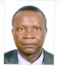

Département de Licences en Droit en Français
Le Département des Licences en Droit en français
regroupe les 3 niveaux de Licences, les enseignements
y sont exclusivement dispensés en langue française.
La dernière année de Licence est marquée par
spécialisation en droit privé ou en droit public.
En savoir plus
Département de Licences en Droit en Arabe
Le Département des Licences en Droit en arabe
regroupe les 3 niveaux de Licence. Les enseignements
sont dispensés en Arabe. En dernière année de Licence,
une spécialisation en droit public ou en droit privé
est proposée aux étudiants.
En savoir plus

Benjamin Bénan DJIKOLOUM Maître de conférences (CAMES) en droit
Doyen de la Faculté des Sciences Juridiques et Politiques
depuis janvier 2016, et Enseignant-chercheur depuis 1997,
Monsieur DJIKOLOUM Benjamin est titulaire d'un doctorat
et d'une HDR en droit privé de l'Université de Poitiers
et a occupé plusieurs postes au sein de l'enseignement
supérieur et scientifique Tchadien avant d'être nommé
en décembre 2019 Vice-Président de l'Université de N'Djaména,
fonction qu'il cumule avec celle de doyen de faculté.